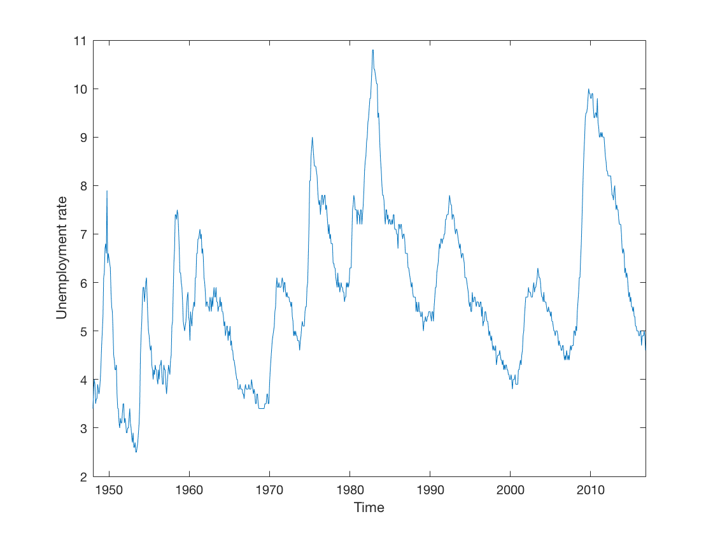
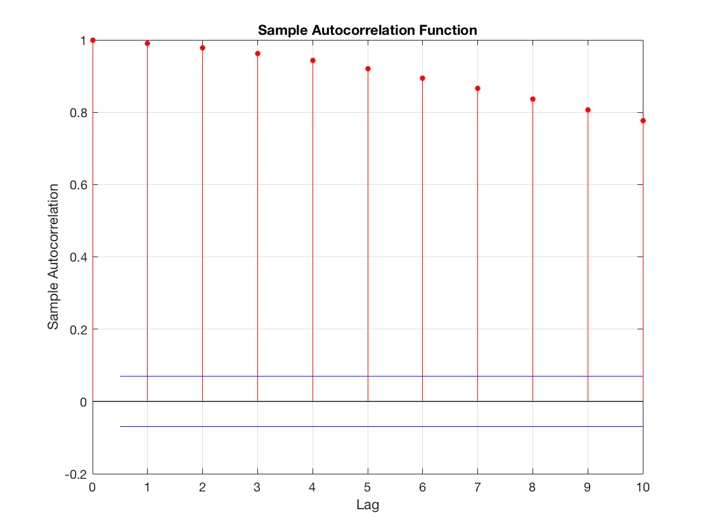
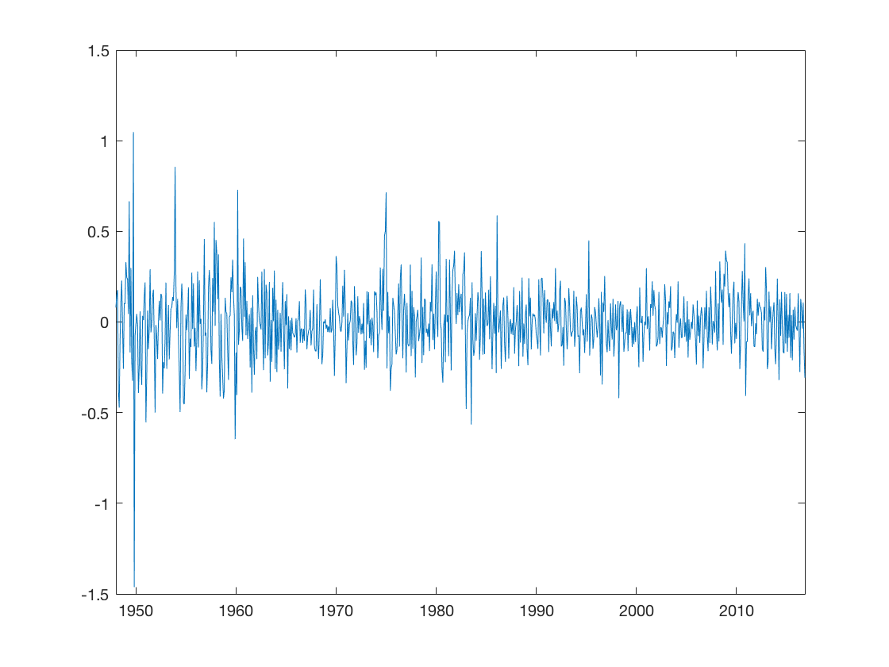
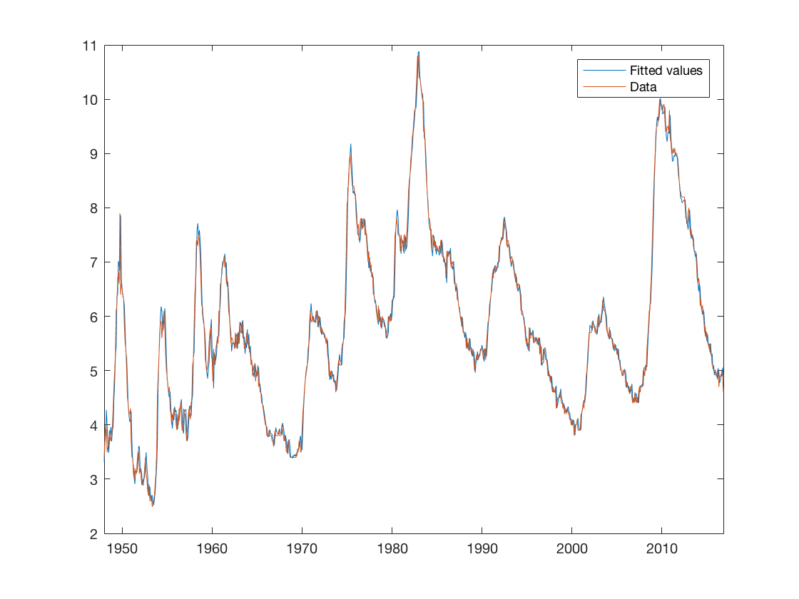

Contents
clear all
close all
clc
Part I. Constructing prediction models for different variables
data = xlsread('time_series_data_2017.xlsx',1);
urate = data(:,2);
timeVec = (1948:1/12:2016+10/12)';
figure
plot(timeVec,urate)
xlim([timeVec(1) timeVec(end)])
xlabel('Time')
ylabel('Unemployment rate')
[h,pValue] = adftest(urate)
figure
autocorr(urate,10)
xlim([0 10])
urateAutocorrs = autocorr(urate,10)
disp('Unemployment rate serial correlation tests')
disp('1 lag')
[h,pValue] = lbqtest(urate,'lags',1)
disp('10 lags')
[h,pValue] = lbqtest(urate,'lags',10)
maxAR = 4;
maxMA = 4;
urateModelCriteria = zeros((maxAR+1)*(maxMA+1)-1,2);
ind = 1;
lagCombinations = urateModelCriteria;
for ii = 0:maxAR
for jj = 0:maxMA
if ii ~= 0 || jj ~= 0
model = arima(ii,0,jj);
[~,~,logL] = estimate(model,urate);
urateModelCriteria(ind,:) = aicbic(logL,ii+jj,length(urate)-max(ii,jj));
lagCombinations(ind,:) = [ii jj];
ind = ind + 1;
end
end
end
[~,minIndices] = min(urateModelCriteria);
bestAICModelLags = lagCombinations(minIndices(1),:);
model = arima(bestAICModelLags(1,1),0,bestAICModelLags(1,2));
modelEstimate = estimate(model,urate);
resid = infer(modelEstimate,urate);
[h,pValue] = lbqtest(resid,'lags',10)
figure
plot(timeVec,resid)
xlim([timeVec(1) timeVec(end)])
urateFit = urate - resid;
figure
plot(timeVec,[urateFit urate])
legend('Fitted values','Data')
xlim([timeVec(1) timeVec(end)])
h =
logical
0
pValue =
0.5162
urateAutocorrs =
1.0000
0.9901
0.9788
0.9629
0.9433
0.9202
0.8939
0.8657
0.8369
0.8069
0.7762
Unemployment rate serial correlation tests
1 lag
h =
logical
1
pValue =
0
10 lags
h =
logical
1
pValue =
0
ARIMA(0,0,1) Model:
--------------------
Conditional Probability Distribution: Gaussian
Standard t
Parameter Value Error Statistic
----------- ----------- ------------ -----------
Constant 5.78875 0.0626604 92.3829
MA{1} 0.91561 0.0133247 68.7153
Variance 0.805437 0.0406695 19.8044
ARIMA(0,0,2) Model:
--------------------
Conditional Probability Distribution: Gaussian
Standard t
Parameter Value Error Statistic
----------- ----------- ------------ -----------
Constant 5.76282 0.0603171 95.5421
MA{1} 1.37659 0.0175223 78.5622
MA{2} 0.759239 0.0186651 40.677
Variance 0.36045 0.0162159 22.2282
ARIMA(0,0,3) Model:
--------------------
Conditional Probability Distribution: Gaussian
Standard t
Parameter Value Error Statistic
----------- ----------- ------------ -----------
Constant 5.69407 0.0560215 101.641
MA{1} 1.51777 0.019205 79.0297
MA{2} 1.36906 0.0275015 49.7813
MA{3} 0.662242 0.0217076 30.5073
Variance 0.204815 0.00802654 25.5172
Warning: Upper bound constraints are active; standard errors may be inaccurate.
ARIMA(0,0,4) Model:
--------------------
Conditional Probability Distribution: Gaussian
Standard t
Parameter Value Error Statistic
----------- ----------- ------------ -----------
Constant 5.70001 0.0534019 106.738
MA{1} 1.41928 0.0225639 62.9003
MA{2} 1.47228 0.0406419 36.2257
MA{3} 1 0.0462362 21.6281
MA{4} 0.448249 0.030966 14.4755
Variance 0.15202 0.00562903 27.0064
ARIMA(1,0,0) Model:
--------------------
Conditional Probability Distribution: Gaussian
Standard t
Parameter Value Error Statistic
----------- ----------- ------------ -----------
Constant 0.0546853 0.0287413 1.90267
AR{1} 0.990824 0.0044854 220.9
Variance 0.0441716 0.00113567 38.8948
ARIMA(1,0,1) Model:
--------------------
Conditional Probability Distribution: Gaussian
Standard t
Parameter Value Error Statistic
----------- ----------- ------------ -----------
Constant 0.0615954 0.0312638 1.97018
AR{1} 0.989617 0.00496747 199.22
MA{1} 0.0803988 0.0213308 3.76913
Variance 0.0437435 0.00123414 35.4445
ARIMA(1,0,2) Model:
--------------------
Conditional Probability Distribution: Gaussian
Standard t
Parameter Value Error Statistic
----------- ----------- ------------ -----------
Constant 0.0773845 0.034952 2.21402
AR{1} 0.986865 0.0055888 176.579
MA{1} 0.0420242 0.0223208 1.88274
MA{2} 0.235011 0.0331977 7.07913
Variance 0.0410197 0.00126357 32.4633
ARIMA(1,0,3) Model:
--------------------
Conditional Probability Distribution: Gaussian
Standard t
Parameter Value Error Statistic
----------- ----------- ------------ -----------
Constant 0.0883421 0.037339 2.36594
AR{1} 0.985001 0.00602073 163.602
MA{1} 0.0401093 0.022916 1.75028
MA{2} 0.204102 0.033361 6.118
MA{3} 0.134568 0.0340517 3.95189
Variance 0.0402837 0.00120099 33.5419
ARIMA(1,0,4) Model:
--------------------
Conditional Probability Distribution: Gaussian
Standard t
Parameter Value Error Statistic
----------- ----------- ------------ -----------
Constant 0.102864 0.0403198 2.5512
AR{1} 0.982552 0.00653497 150.353
MA{1} 0.015132 0.0232519 0.650786
MA{2} 0.2199 0.0336273 6.53934
MA{3} 0.134285 0.0325976 4.11949
MA{4} 0.131267 0.0373683 3.51279
Variance 0.039525 0.00122391 32.2939
ARIMA(2,0,0) Model:
--------------------
Conditional Probability Distribution: Gaussian
Standard t
Parameter Value Error Statistic
----------- ----------- ------------ -----------
Constant 0.0599594 0.0288818 2.07603
AR{1} 1.11396 0.0207652 53.6455
AR{2} -0.12407 0.0209893 -5.91109
Variance 0.0434943 0.00120027 36.2373
ARIMA(2,0,1) Model:
--------------------
Conditional Probability Distribution: Gaussian
Standard t
Parameter Value Error Statistic
----------- ----------- ------------ -----------
Constant 0.116264 0.0542958 2.14131
AR{1} 0.0672034 0.0106052 6.3368
AR{2} 0.913487 0.00862155 105.954
MA{1} 0.967227 0.0083419 115.948
Variance 0.0436879 0.00134279 32.5352
ARIMA(2,0,2) Model:
--------------------
Conditional Probability Distribution: Gaussian
Standard t
Parameter Value Error Statistic
----------- ----------- ------------ -----------
Constant 0.0371575 0.010189 3.64682
AR{1} 1.82967 0.0256801 71.2484
AR{2} -0.836077 0.0254809 -32.812
MA{1} -0.837506 0.0360705 -23.2186
MA{2} 0.221347 0.0276085 8.01733
Variance 0.0377908 0.00118258 31.9563
ARIMA(2,0,3) Model:
--------------------
Conditional Probability Distribution: Gaussian
Standard t
Parameter Value Error Statistic
----------- ----------- ------------ -----------
Constant 0.0379093 0.010831 3.50007
AR{1} 1.82536 0.0343338 53.1652
AR{2} -0.831902 0.0338737 -24.5589
MA{1} -0.832478 0.0430289 -19.3469
MA{2} 0.2127 0.0368954 5.76493
MA{3} 0.012974 0.0423947 0.306028
Variance 0.037786 0.0011853 31.879
ARIMA(2,0,4) Model:
--------------------
Conditional Probability Distribution: Gaussian
Standard t
Parameter Value Error Statistic
----------- ----------- ------------ -----------
Constant 0.0433636 0.0124773 3.47539
AR{1} 1.79847 0.0404606 44.4499
AR{2} -0.80595 0.0399221 -20.1881
MA{1} -0.813752 0.0466818 -17.4319
MA{2} 0.236698 0.0372232 6.35889
MA{3} -0.045177 0.0481615 -0.938031
MA{4} 0.0796002 0.0371333 2.14363
Variance 0.0376159 0.00120162 31.3042
ARIMA(3,0,0) Model:
--------------------
Conditional Probability Distribution: Gaussian
Standard t
Parameter Value Error Statistic
----------- ----------- ------------ -----------
Constant 0.0723885 0.0269249 2.68854
AR{1} 1.07879 0.0211764 50.9429
AR{2} 0.199701 0.0396765 5.03322
AR{3} -0.290857 0.0309433 -9.39968
Variance 0.0398431 0.00120673 33.0174
ARIMA(3,0,1) Model:
--------------------
Conditional Probability Distribution: Gaussian
Standard t
Parameter Value Error Statistic
----------- ----------- ------------ -----------
Constant 0.0430871 0.0117982 3.652
AR{1} 1.57208 0.0505619 31.0921
AR{2} -0.338282 0.0792724 -4.26734
AR{3} -0.241222 0.0336818 -7.16179
MA{1} -0.569851 0.0524464 -10.8654
Variance 0.0378788 0.00118929 31.8499
ARIMA(3,0,2) Model:
--------------------
Conditional Probability Distribution: Gaussian
Standard t
Parameter Value Error Statistic
----------- ----------- ------------ -----------
Constant 0.0338001 0.0102927 3.2839
AR{1} 1.95837 0.161108 12.1556
AR{2} -1.08274 0.312935 -3.45994
AR{3} 0.118532 0.153396 0.772718
MA{1} -0.963581 0.160236 -6.0135
MA{2} 0.319051 0.130855 2.43821
Variance 0.0377921 0.0011852 31.8867
ARIMA(3,0,3) Model:
--------------------
Conditional Probability Distribution: Gaussian
Standard t
Parameter Value Error Statistic
----------- ----------- ------------ -----------
Constant 0.0739969 0.0198595 3.72602
AR{1} 0.883513 0.0252483 34.9929
AR{2} 0.900531 0.0147222 61.1681
AR{3} -0.796776 0.0268362 -29.6904
MA{1} 0.129601 0.0379957 3.41095
MA{2} -0.613857 0.0377055 -16.2803
MA{3} 0.238739 0.0285574 8.35997
Variance 0.0370225 0.00119042 31.1004
ARIMA(3,0,4) Model:
--------------------
Conditional Probability Distribution: Gaussian
Standard t
Parameter Value Error Statistic
----------- ----------- ------------ -----------
Constant 0.0726992 0.0202828 3.58427
AR{1} 0.887334 0.0322115 27.5471
AR{2} 0.90007 0.0146942 61.2535
AR{3} -0.799914 0.0327449 -24.4287
MA{1} 0.125422 0.0439363 2.85463
MA{2} -0.611046 0.0380526 -16.0579
MA{3} 0.235431 0.0324718 7.25032
MA{4} -0.0108641 0.0414982 -0.261796
Variance 0.0370189 0.00118978 31.1141
ARIMA(4,0,0) Model:
--------------------
Conditional Probability Distribution: Gaussian
Standard t
Parameter Value Error Statistic
----------- ----------- ------------ -----------
Constant 0.0834877 0.0262152 3.18471
AR{1} 1.02347 0.0216312 47.3145
AR{2} 0.238168 0.0411087 5.79363
AR{3} -0.087429 0.0508892 -1.71803
AR{4} -0.188547 0.0315438 -5.97732
Variance 0.0384407 0.0012241 31.4032
ARIMA(4,0,1) Model:
--------------------
Conditional Probability Distribution: Gaussian
Standard t
Parameter Value Error Statistic
----------- ----------- ------------ -----------
Constant 0.0494334 0.0151314 3.26693
AR{1} 1.49987 0.0945095 15.8701
AR{2} -0.277218 0.102867 -2.69492
AR{3} -0.175701 0.0762324 -2.30481
AR{4} -0.0554681 0.0571318 -0.97088
MA{1} -0.504352 0.0950493 -5.30621
Variance 0.0378224 0.00119445 31.665
ARIMA(4,0,2) Model:
--------------------
Conditional Probability Distribution: Gaussian
Standard t
Parameter Value Error Statistic
----------- ----------- ------------ -----------
Constant 0.0865474 0.0231044 3.74592
AR{1} 0.611666 0.0466956 13.099
AR{2} 1.15582 0.0311942 37.0525
AR{3} -0.52397 0.049918 -10.4966
AR{4} -0.258405 0.032534 -7.94259
MA{1} 0.408225 0.050463 8.08958
MA{2} -0.559657 0.0514621 -10.8751
Variance 0.0371004 0.00126081 29.4259
ARIMA(4,0,3) Model:
--------------------
Conditional Probability Distribution: Gaussian
Standard t
Parameter Value Error Statistic
----------- ----------- ------------ -----------
Constant 0.0878808 0.024287 3.61842
AR{1} 0.651114 0.0288032 22.6056
AR{2} 0.487707 0.0128565 37.9346
AR{3} 0.69737 0.0115974 60.1315
AR{4} -0.851316 0.0271383 -31.3695
MA{1} 0.487043 0.0437834 11.1239
MA{2} 0.0667934 0.0535992 1.24616
MA{3} -0.717233 0.0433471 -16.5463
Variance 0.0375195 0.00121652 30.8418
Warning: Lower bound constraints are active; standard errors may be inaccurate.
Warning: Nonlinear inequality constraints are active; standard errors may be
inaccurate.
ARIMA(4,0,4) Model:
--------------------
Conditional Probability Distribution: Gaussian
Standard t
Parameter Value Error Statistic
----------- ----------- ------------ -----------
Constant 0.0599802 0.0200164 2.99655
AR{1} 1.07787 0.131262 8.21162
AR{2} 0.737157 0.112662 6.54311
AR{3} -1 0.137623 -7.26621
AR{4} 0.174639 0.12015 1.4535
MA{1} -0.0624705 0.138516 -0.450999
MA{2} -0.652618 0.0368787 -17.6963
MA{3} 0.374977 0.101834 3.68222
MA{4} -0.0348751 0.0426201 -0.818277
Variance 0.0369636 0.00121134 30.5147
ARIMA(3,0,3) Model:
--------------------
Conditional Probability Distribution: Gaussian
Standard t
Parameter Value Error Statistic
----------- ----------- ------------ -----------
Constant 0.0739969 0.0198595 3.72602
AR{1} 0.883513 0.0252483 34.9929
AR{2} 0.900531 0.0147222 61.1681
AR{3} -0.796776 0.0268362 -29.6904
MA{1} 0.129601 0.0379957 3.41095
MA{2} -0.613857 0.0377055 -16.2803
MA{3} 0.238739 0.0285574 8.35997
Variance 0.0370225 0.00119042 31.1004
h =
logical
0
pValue =
0.3949
   